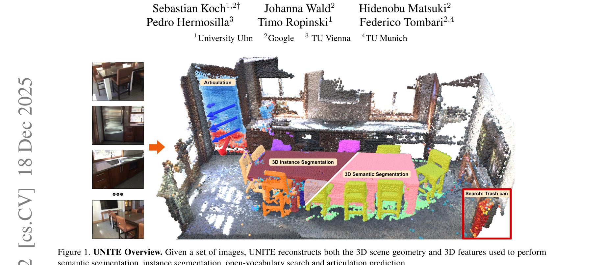
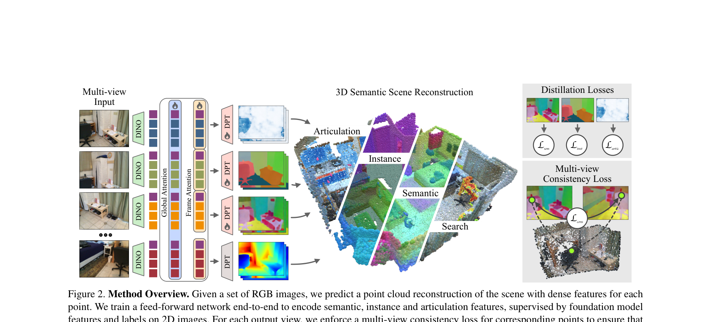
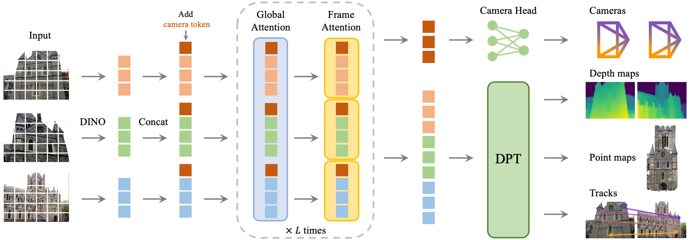
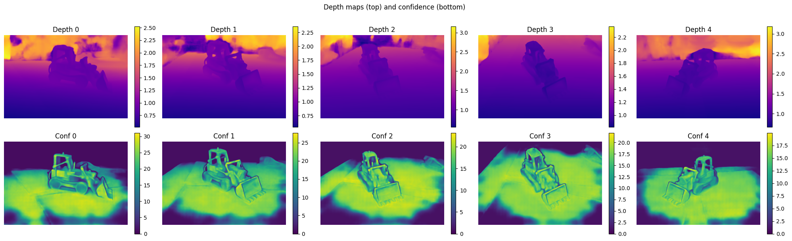
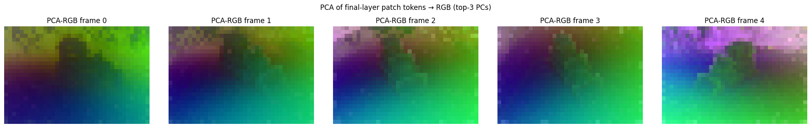
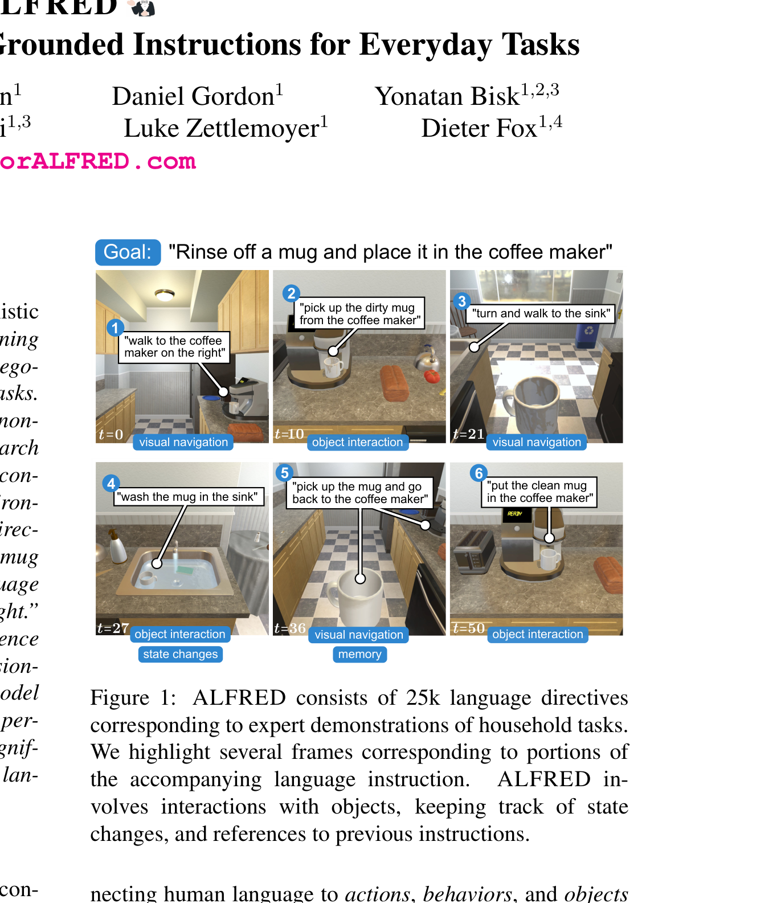

Supervisor Meeting · Mar 3, 2026
3D Scene Understanding
for Object Navigation
UNITE
What Is UNITE?

Takes a set of RGB images → reconstructs the full 3D scene → labels every 3D point with what it is, which object it belongs to, and how it moves.
Key Properties
- Works from RGB only — no depth sensor needed
- Single forward pass, a few seconds per scene
- Outputs are language-queryable (CLIP-aligned)
- Instance-level segmentation in 3D
Per-Point Output
- 3D coordinates — geometry
- CLIP features — open-vocabulary semantics
- Instance ID — object grouping
- Articulation vector — how parts move
UNITE
How It Works

1. Input
Set of RGB images from different viewpoints of the same scene
2. Backbone (VGGT)
Pre-trained vision transformer encodes images, fuses across views via attention → predicts 3D geometry
3. Semantic Heads (DPT)
Task-specific DPT heads on shared backbone predict semantics, instances, and articulation per point
4. Output
Dense 3D point cloud where each point has: coordinates, CLIP features, instance ID, articulation vector
Foundation
VGGT: Visual Geometry Grounded Transformer CVPR 2025 Best Paper

Parameter Breakdown (1.26B total)
| Aggregator | 909M | 72.4% |
| Camera Head | 216M | 17.2% |
| Depth Head | 33M | 2.6% |
| Point Head | 33M | 2.6% |
| Track Head | 66M | 5.2% |


Landscape
The Research Gap
Line A: VLAs with 3D
Several recent works add 3D to VLAs, but all use simple or implicit 3D:
- SpatialVLA — 3D position encoding only (RSS 2025)
- Spatial Forcing — implicit alignment, no 3D at inference (ICLR 2026)
- 3D-VLA — point clouds but no semantics per point (ICML 2024)
- eVGGT — distilled VGGT as frozen encoder for ACT/DP manipulation (Vuong et al. 2025)
Line B: Rich 3D Understanding
Foundation models for dense 3D scene understanding exist, but not yet used with semantics for action:
- UNITE — full semantic 3D from RGB (Koch et al. 2025)
- VGGT — geometry backbone (CVPR 2025 Best Paper)
The Gap
eVGGT validates VGGT for robotics — but uses latent geometry only.
- eVGGT: geometry-only, no semantics/CLIP/instance features
- eVGGT: manipulation only, not navigation
- UNITE's per-point semantics + instances never used for action
- World models (DreamerV3) learn from 2D pixels only — never tested with rich 3D features
Research Question
Can 3D scene understanding improve world models for navigation?
Hypothesis
Replacing DreamerV3's CNN encoder with frozen VGGT + DPT features gives the world model an explicit geometric and semantic prior — leading to better sample efficiency and navigation success on HM3D ObjectNav.
Standard DreamerV3 learns all 3D structure implicitly from 2D pixels. We provide it directly via a frozen VGGT backbone.
Background
DreamerV3 — Recurrent State-Space Model (RSSM)
World Model (RSSM)
- Deterministic — GRU carries long-range memory via \(h_t\)
- Stochastic — categorical latent \(z_t\) (32 classes × 32 dims)
- Posterior uses real observations; Prior imagines without them
Actor-Critic in Imagination
- Unroll prior 15 steps — no environment needed
- Actor maximises \(\lambda\)-returns over imagined trajectories
- Critic predicts discounted value
DreamerV3 Innovations
- Symlog predictions — scale-free losses across tasks
- Discrete latents — 32 × 32 categorical (no KL balancing needed)
- Unimix entropy — 1% uniform mix prevents posterior collapse
- Single hyperparameter set works across 150+ tasks
Proposed Architecture
VGGT + DPT + DreamerV3 RSSM World Model
Benchmark
Habitat ObjectNav Challenge
The Task
Agent is spawned in an unseen apartment. Given a target object category (e.g., "chair"), it must navigate to any instance of that category using only egocentric RGB-D and a compass.
HM3D Dataset
- 1,000 real-world 3D scans of homes
- Photorealistic rendering in Habitat simulator
- 216 object categories with semantic annotations
- Standard benchmark since 2023 Habitat Challenge
Key Metric: SPL
Rewards both finding the target and doing so efficiently. Standardizes path length by the shortest possible path.

Benchmark
ALFRED — Action Learning From Realistic Environments
What It Is
25,743 language-annotated expert demonstrations for household tasks in AI2-THOR. Each task has both high-level and step-by-step instructions. 13 discrete actions (5 nav + 7 interaction + stop).
Task Types (7 categories)
- Pick & Place · Stack & Place
- Heat & Place · Cool & Place · Clean & Place
- Pick Two & Place · Examine in Light
- All require navigation + manipulation + state changes
Baseline vs Human Gap
| Task Success | Goal-Cond. | |
|---|---|---|
| Seq2Seq+PM | 4.00% | 7.10% |
| Human | 91.00% | 86.00% |
87 pp gap — spatial understanding is the key bottleneck.

Baseline
DreamerV3 — Pixel-Only World Model
DreamerV3 — Pixel-Only
Baseline · JAX- Standard CNN encoder on 2D RGB only
- Learns geometry implicitly from pixels — no depth, no 3D, no semantics
- State-of-the-art general RL agent (150+ tasks, Nature 2025)
- First application to HM3D ObjectNav (no prior work)
- Same RSSM architecture as our approach — only encoder differs
Timeline
6-Month Execution Plan
BWUniCluster Setup + Baseline
Environment setup on cluster · Start DreamerV3 baseline training · Compare VGGT variants
VGGT Integration + Baseline Done
Integrate chosen VGGT variant into DreamerV3 encoder · Finish baseline training
Full Pipeline + Semantic Head
Finish full pipeline of our approach · Start training custom semantic head
Semantic Head Integration
Integrate new semantic head into pipeline · Ablation runs
Iterate + Refine
Improve weakest components · Generalization tests · Buffer for reruns
Writing
Thesis writing · Final analysis · Defense prep